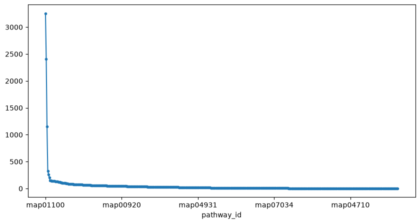

Enrichment analysis#
Reference:
List relevant files#
ms2query based annotations (contains smiles and inchikeys)
ancova results (contains feature IDs and p-values)
fname_ms2query = "results_prepared/output_ms2query_Linked_data.tsv"
fname_ancova = "results_prepared/ancova_results.csv"
fname_pathways_map = "results_prepared/pathways_map.tsv"
fname_inchikey_to_kegg = "results_prepared/inchikey_to_kegg.csv"
fname_annotations = "results_prepared/link_compound_pathway.tsv"
Kegg annotations#
Can be downloaded from KEGG:
https://rest.kegg.jp/link/compound/pathway
| pathway_id | Source | |
|---|---|---|
| compound_id | ||
| C00022 | map00010 | KEGG |
| C00024 | map00010 | KEGG |
| C00031 | map00010 | KEGG |
| C00033 | map00010 | KEGG |
| C00036 | map00010 | KEGG |
| ... | ... | ... |
| C13776 | map07232 | KEGG |
| C13777 | map07232 | KEGG |
| C13820 | map07232 | KEGG |
| C07575 | map07235 | KEGG |
| C13737 | map07235 | KEGG |
19580 rows × 2 columns
Pathway mapping: fetch names#
pathways_map = pd.read_csv(
fname_pathways_map, sep="\t", header=None, names=["pathway_id", "pathway_name"]
)
pathways_map.head()
| pathway_id | pathway_name | |
|---|---|---|
| 0 | map01100 | Metabolic pathways |
| 1 | map01110 | Biosynthesis of secondary metabolites |
| 2 | map01120 | Microbial metabolism in diverse environments |
| 3 | map01200 | Carbon metabolism |
| 4 | map01210 | 2-Oxocarboxylic acid metabolism |
exclude some generic pathways?
mask = pathways_map["pathway_name"].str.contains("pathways", case=False)
pathways_map.loc[mask]
| pathway_id | pathway_name | |
|---|---|---|
| 0 | map01100 | Metabolic pathways |
| 32 | map00720 | Other carbon fixation pathways |
| 185 | map01010 | Overview of biosynthetic pathways |
| 308 | map04550 | Signaling pathways regulating pluripotency of ... |
| 412 | map05200 | Pathways in cancer |
| 483 | map05022 | Pathways of neurodegeneration - multiple diseases |
Can be downloaded from KEGG:
https://rest.kegg.jp/link/compound/pathway
Filtering pathways#
filter some generic pathways if you want.
pathway_id
map01100 3,253
map01110 2,406
map01120 1,155
map01240 330
map01220 263
...
map03260 1
map03272 1
map07013 1
map07014 1
map07032 1
Length: 463, dtype: int64

Some pathway maps:
For example map00010:
see conf map conf map of map00010
Additional information for map00010 and map00030:
https://rest.kegg.jp/get/path:map00030+path:map00010
ms2query_results = pd.read_csv(fname_ms2query, index_col=0, sep="\t").drop_duplicates(
subset=["inchikey", "smiles"]
)
ms2query_results.head()
| query_spectrum_nr | ms2query_model_prediction | precursor_mz_difference | precursor_mz_query_spectrum | precursor_mz_analog | inchikey | analog_compound_name | smiles | cf_kingdom | cf_superclass | cf_class | cf_subclass | cf_direct_parent | npc_class_results | npc_superclass_results | npc_pathway_results | |
|---|---|---|---|---|---|---|---|---|---|---|---|---|---|---|---|---|
| id | ||||||||||||||||
| 4,051,789,042,754,256,385 | 1 | 0.489 | 78.866 | 414.301 | 493.167 | UKTUQKGXNWDYAI | 8-Hydroxycarapinic Acid | CC1(C)C(=O)[C@@H]2C[C@@]3(O)C4=CC(=O)O[C@@H](c... | Organic compounds | Lipids and lipid-like molecules | Prenol lipids | Triterpenoids | Limonoids | Limonoids | Triterpenoids | Terpenoids |
| 4,051,789,042,754,256,385 | 2 | 0.489 | 137.119 | 414.301 | 551.420 | UTMFIKFVXBHDRL | (R)-1-(4-benzylpiperazin-1-yl)-4-((3R,5R,8R,9S... | O=C(N1CCN(CC=2C=CC=CC2)CC1)CCC(C)C3CCC4C5CCC6C... | Organic compounds | Lipids and lipid-like molecules | Steroids and steroid derivatives | Bile acids, alcohols and derivatives | Dihydroxy bile acids, alcohols and derivatives | NaN | Steroids | Terpenoids |
| 4,051,789,042,754,256,385 | 3 | 0.483 | 39.909 | 414.301 | 454.210 | NFUZCPRJHPTWRC | 2-[2-oxo-4-(piperidylcarbonyl)hydroquinolyl]-N... | Cc1cc(C)c(N=C(O)Cn2c(=O)cc(C(=O)N3CCCCC3)c3ccc... | Organic compounds | Organoheterocyclic compounds | Quinolines and derivatives | Quinoline carboxamides | Quinoline carboxamides | NaN | Tryptophan alkaloids | Alkaloids |
| 4,051,789,042,754,256,385 | 4 | 0.409 | 96.699 | 414.301 | 511.000 | KZVHAGNFWJIOMX | Jamaicamide B | CO\C(CCNC(=O)CC\C=C\C(C)CC\C(CCCC#C)=C\Cl)=C\C... | Organic compounds | Lipids and lipid-like molecules | Fatty Acyls | Fatty amides | N-acyl amines | NaN | NaN | NaN |
| 4,051,789,042,754,256,385 | 6 | 0.409 | 280.057 | 414.301 | 694.358 | RPJBXUNEXVNBIF | 7-benzyl-11,14-dimethyl-16-(2-methylpropyl)-10... | CC(C)CC1OC(=O)C2CCCN2C(=O)CCN=C(O)C(Cc2ccccc2)... | Organic compounds | Organic acids and derivatives | Peptidomimetics | Depsipeptides | Cyclic depsipeptides | Cyclic peptides; Depsipeptides | Oligopeptides | Amino acids and Peptides; Polyketides |
inchikey_to_kegg = pd.read_csv(fname_inchikey_to_kegg, index_col=0).astype({"id": str})
inchikey_to_kegg
| kegg_id | id | ms2query_model_prediction | precursor_mz_difference | precursor_mz_query_spectrum | precursor_mz_analog | analog_compound_name | smiles | |
|---|---|---|---|---|---|---|---|---|
| inchikey | ||||||||
| YZUUTMGDONTGTN | C01731 | 4051789042754256385 | 0.409 | 22.935 | 414.301 | 437.236 | Nonaethylene glycol|2-[2-[2-[2-[2-[2-[2-[2-(2-... | OCCOCCOCCOCCOCCOCCOCCOCCOCCO |
| KBKUJJFDSHBPPA | C12048 | 4051789042754256385 | 0.409 | 44.929 | 414.301 | 459.230 | Cinobufotalin | O=C1OC=C(C=C1)C2C(OC(=O)C)C3OC34C5CCC6(O)CC(O)... |
| IOYZYMQFUSNATM | C02429 | 4051789042754256385 | 0.409 | 97.137 | 414.301 | 511.438 | Thonizide | CCCCCCCCCCCCCCCC[N+](C)(C)CCN(Cc1ccc(OC)cc1)c1... |
| WVULKSPCQVQLCU | C00193 | 4051789042754256385 | 0.594 | 0.000 | 414.301 | 414.301 | glycodeoxycholic acid | C[C@H](CCC(=O)NCC(=O)O)[C@H]1CCC2[C@@]1([C@H](... |
| WVULKSPCQVQLCU | C00193 | 17351696255561211830 | 0.409 | 35.801 | 414.299 | 450.100 | glycodeoxycholate | C(C2([H])3)CC([H])(C1)C(C)(C(CC([H])(O)C(C(C([... |
| ... | ... | ... | ... | ... | ... | ... | ... | ... |
| IVENSCMCQBJAKW | C11713 | 9750239525216332245 | 0.378 | 36.001 | 138.053 | 174.054 | Desisopropylatrazine | CCNc1nc(N)nc(Cl)n1 |
| PKOFBDHYTMYVGJ | C06241 | 9750239525216332245 | 0.378 | 76.995 | 138.053 | 215.048 | N-(4-sulfamoylphenyl)acetamide | CC(=O)NC1=CC=C(C=C1)S(N)(=O)=O |
| COESHZUDRKCEPA | C08640 | 9750239525216332245 | 0.346 | 199.850 | 138.053 | 337.903 | beta-(3,5-dibromo-4-hydroxyphenyl)alanine | C1=C(C=C(C(=C1Br)O)Br)CC(C(=O)O)N |
| YNBADRVTZLEFNH | C04545 | 9750239525216332245 | 0.764 | 0.002 | 138.053 | 138.055 | METHYL NICOTINIC ACID | COC(=O)C1=CC=CN=C1 |
| BHTRKEVKTKCXOH | C08395 | 3043165930917491123 | 0.809 | 0.004 | 538.255 | 538.251 | tauroursodeoxycholic acid | C[C@H](CCC(=O)NCCS(=O)(=O)O)[C@H]1CC[C@@H]2[C@... |
100 rows × 8 columns
Reload analysis of covariance (ANCOVA) results#
| group1 | group2 | mean(group1) | std(group1) | mean(group2) | std(group2) | posthoc T-Statistics | posthoc pvalue | coef | std err | ... | log2FC | FC | F-statistics | pvalue | padj | correction | rejected | -log10 pvalue | Method | posthoc padj | |
|---|---|---|---|---|---|---|---|---|---|---|---|---|---|---|---|---|---|---|---|---|---|
| identifier | |||||||||||||||||||||
| 8688552057745683191 | CTR | CVD | 12.353 | 0.637 | 13.042 | 0.299 | 15.878 | 0.001 | 0.874 | 0.055 | ... | -0.689 | 0.620 | 252.110 | 0.001 | 0.194 | FDR correction BH | False | 3.265 | One-way ancova | 0.194 |
| 4803564648587047687 | CTR | CVD | 12.092 | 0.044 | 11.818 | 0.021 | -13.572 | 0.001 | -0.284 | 0.021 | ... | 0.274 | 1.209 | 184.207 | 0.001 | 0.194 | FDR correction BH | False | 3.063 | One-way ancova | 0.194 |
| 122927701965791210 | CTR | CVD | 13.368 | 0.809 | 14.097 | 0.306 | 14.470 | 0.001 | 0.957 | 0.066 | ... | -0.729 | 0.603 | 209.372 | 0.001 | 0.194 | FDR correction BH | False | 3.145 | One-way ancova | 0.194 |
| 14183644523572007298 | CTR | CVD | 11.362 | 0.828 | 12.072 | 0.356 | 21.223 | 0.000 | 0.948 | 0.045 | ... | -0.710 | 0.611 | 450.404 | 0.000 | 0.194 | FDR correction BH | False | 3.640 | One-way ancova | 0.194 |
| 16452322344680482043 | CTR | CVD | 14.418 | 0.588 | 15.296 | 0.362 | 7.963 | 0.004 | 1.054 | 0.132 | ... | -0.879 | 0.544 | 63.409 | 0.004 | 0.318 | FDR correction BH | False | 2.384 | One-way ancova | 0.318 |
| ... | ... | ... | ... | ... | ... | ... | ... | ... | ... | ... | ... | ... | ... | ... | ... | ... | ... | ... | ... | ... | ... |
| 15322232151823440986 | CTR | CVD | 12.649 | 0.145 | 12.693 | 0.164 | 0.027 | 0.980 | 0.003 | 0.106 | ... | -0.044 | 0.970 | 0.001 | 0.980 | 0.992 | FDR correction BH | False | 0.009 | One-way ancova | 0.992 |
| 13146520139614759536 | CTR | CVD | 11.517 | 0.213 | 11.555 | 0.121 | 0.010 | 0.993 | 0.001 | 0.138 | ... | -0.038 | 0.974 | 0.000 | 0.993 | 0.994 | FDR correction BH | False | 0.003 | One-way ancova | 0.994 |
| 3927519029408433709 | CTR | CVD | 13.941 | 0.112 | 13.919 | 0.142 | -0.009 | 0.993 | -0.001 | 0.111 | ... | 0.022 | 1.015 | 0.000 | 0.993 | 0.994 | FDR correction BH | False | 0.003 | One-way ancova | 0.994 |
| 18162318233842994935 | CTR | CVD | 13.669 | 0.374 | 13.720 | 0.325 | -0.012 | 0.991 | -0.004 | 0.308 | ... | -0.051 | 0.965 | 0.000 | 0.991 | 0.994 | FDR correction BH | False | 0.004 | One-way ancova | 0.994 |
| 491936035475549414 | CTR | CVD | 11.796 | 2.677 | 12.144 | 2.116 | 0.005 | 0.996 | 0.010 | 2.165 | ... | -0.348 | 0.786 | 0.000 | 0.996 | 0.996 | FDR correction BH | False | 0.002 | One-way ancova | 0.996 |
897 rows × 22 columns
Let’s see if we could identify features from the differential regulations
analysis using the available MS2 annotations. We will use the inchikey_to_kegg
mapping from 3_enrichment_analysis_fetch_kegg.ipynb, which was pre-executed and the
results stored. Rerun with new data!
| kegg_id | id | ms2query_model_prediction | precursor_mz_difference | precursor_mz_query_spectrum | precursor_mz_analog | analog_compound_name | smiles | |
|---|---|---|---|---|---|---|---|---|
| inchikey | ||||||||
| YZUUTMGDONTGTN | C01731 | 4051789042754256385 | 0.409 | 22.935 | 414.301 | 437.236 | Nonaethylene glycol|2-[2-[2-[2-[2-[2-[2-[2-(2-... | OCCOCCOCCOCCOCCOCCOCCOCCOCCO |
| KBKUJJFDSHBPPA | C12048 | 4051789042754256385 | 0.409 | 44.929 | 414.301 | 459.230 | Cinobufotalin | O=C1OC=C(C=C1)C2C(OC(=O)C)C3OC34C5CCC6(O)CC(O)... |
| IOYZYMQFUSNATM | C02429 | 4051789042754256385 | 0.409 | 97.137 | 414.301 | 511.438 | Thonizide | CCCCCCCCCCCCCCCC[N+](C)(C)CCN(Cc1ccc(OC)cc1)c1... |
| WVULKSPCQVQLCU | C00193 | 4051789042754256385 | 0.594 | 0.000 | 414.301 | 414.301 | glycodeoxycholic acid | C[C@H](CCC(=O)NCC(=O)O)[C@H]1CCC2[C@@]1([C@H](... |
| WVULKSPCQVQLCU | C00193 | 17351696255561211830 | 0.409 | 35.801 | 414.299 | 450.100 | glycodeoxycholate | C(C2([H])3)CC([H])(C1)C(C)(C(CC([H])(O)C(C(C([... |
| ... | ... | ... | ... | ... | ... | ... | ... | ... |
| IVENSCMCQBJAKW | C11713 | 9750239525216332245 | 0.378 | 36.001 | 138.053 | 174.054 | Desisopropylatrazine | CCNc1nc(N)nc(Cl)n1 |
| PKOFBDHYTMYVGJ | C06241 | 9750239525216332245 | 0.378 | 76.995 | 138.053 | 215.048 | N-(4-sulfamoylphenyl)acetamide | CC(=O)NC1=CC=C(C=C1)S(N)(=O)=O |
| COESHZUDRKCEPA | C08640 | 9750239525216332245 | 0.346 | 199.850 | 138.053 | 337.903 | beta-(3,5-dibromo-4-hydroxyphenyl)alanine | C1=C(C=C(C(=C1Br)O)Br)CC(C(=O)O)N |
| YNBADRVTZLEFNH | C04545 | 9750239525216332245 | 0.764 | 0.002 | 138.053 | 138.055 | METHYL NICOTINIC ACID | COC(=O)C1=CC=CN=C1 |
| BHTRKEVKTKCXOH | C08395 | 3043165930917491123 | 0.809 | 0.004 | 538.255 | 538.251 | tauroursodeoxycholic acid | C[C@H](CCC(=O)NCCS(=O)(=O)O)[C@H]1CC[C@@H]2[C@... |
100 rows × 8 columns
regex_filter = "pval|padj|reject|FC"
ids_found_inMS2 = inchikey_to_kegg["id"].unique().tolist()
ids_found_inMS_also_in_ancova = list(set(ids_found_inMS2).intersection(ancova.index))
ancova.loc[ids_found_inMS_also_in_ancova].filter(regex=regex_filter).sort_values(
"pvalue"
)
| posthoc pvalue | log2FC | FC | pvalue | padj | rejected | -log10 pvalue | posthoc padj | |
|---|---|---|---|---|---|---|---|---|
| identifier | ||||||||
| 4051789042754256385 | 0.025 | 1.598 | 3.027 | 0.025 | 0.562 | False | 1.596 | 0.562 |
| 7939233295536706460 | 0.067 | 1.033 | 2.046 | 0.067 | 0.712 | False | 1.176 | 0.712 |
| 356441345885270616 | 0.396 | -0.096 | 0.935 | 0.396 | 0.854 | False | 0.402 | 0.854 |
Make the few identified features significant for illustration purposes.
ancova.loc[ids_found_inMS_also_in_ancova, "pvalue"] = 0.01
ancova.loc[ids_found_inMS_also_in_ancova].filter(regex=regex_filter).sort_values(
"pvalue"
)
| posthoc pvalue | log2FC | FC | pvalue | padj | rejected | -log10 pvalue | posthoc padj | |
|---|---|---|---|---|---|---|---|---|
| identifier | ||||||||
| 7939233295536706460 | 0.067 | 1.033 | 2.046 | 0.010 | 0.712 | False | 1.176 | 0.712 |
| 356441345885270616 | 0.396 | -0.096 | 0.935 | 0.010 | 0.854 | False | 0.402 | 0.854 |
| 4051789042754256385 | 0.025 | 1.598 | 3.027 | 0.010 | 0.562 | False | 1.596 | 0.562 |
Let’s manually update some compound IDs for the few features we identified.
choose one compound per feature
| kegg_id | id | ms2query_model_prediction | precursor_mz_difference | precursor_mz_query_spectrum | precursor_mz_analog | analog_compound_name | smiles | |
|---|---|---|---|---|---|---|---|---|
| inchikey | ||||||||
| YZUUTMGDONTGTN | C01731 | 4051789042754256385 | 0.409 | 22.935 | 414.301 | 437.236 | Nonaethylene glycol|2-[2-[2-[2-[2-[2-[2-[2-(2-... | OCCOCCOCCOCCOCCOCCOCCOCCOCCO |
| KBKUJJFDSHBPPA | C12048 | 4051789042754256385 | 0.409 | 44.929 | 414.301 | 459.230 | Cinobufotalin | O=C1OC=C(C=C1)C2C(OC(=O)C)C3OC34C5CCC6(O)CC(O)... |
| IOYZYMQFUSNATM | C02429 | 4051789042754256385 | 0.409 | 97.137 | 414.301 | 511.438 | Thonizide | CCCCCCCCCCCCCCCC[N+](C)(C)CCN(Cc1ccc(OC)cc1)c1... |
| WVULKSPCQVQLCU | C00193 | 4051789042754256385 | 0.594 | 0.000 | 414.301 | 414.301 | glycodeoxycholic acid | C[C@H](CCC(=O)NCC(=O)O)[C@H]1CCC2[C@@]1([C@H](... |
| WVVSZNPYNCNODU | C03194 | 356441345885270616 | 0.528 | 39.930 | 366.116 | 326.186 | (6aR,9S)-N-[(2S)-1-hydroxypropan-2-yl]-7-methy... | C[C@@H](CO)NC(=O)[C@@H]1CN([C@@H]2CC3=CNC4=CC=... |
| QSLJIVKCVHQPLV | C02962 | 356441345885270616 | 0.409 | 269.312 | 366.116 | 635.428 | h_61_17_epioxandrolone | O=C1OC[C@@]2(C)C(CCC3C2CC[C@@]4(C)C3CC[C@@]4(C... |
| HSCJRCZFDFQWRP | C06393 | 356441345885270616 | 0.409 | 199.294 | 366.116 | 565.410 | UDP-glucopyranoside | C1=CN(C(=O)NC1=O)C2C(C(C(O2)COP(=O)(O)OP(=O)(O... |
| GHCZAUBVMUEKKP | C10358 | 7939233295536706460 | 0.567 | 0.001 | 472.304 | 472.303 | GLYCOCHENODEOXYCHOLATE | CC(CCC(=O)NCC(=O)O)C1CCC2C1(CCC3C2C(CC4C3(CCC(... |
rename_index = {
"4051789042754256385": "C12048",
"7939233295536706460": "C10358",
"356441345885270616": "C03194", # C02962
}
ancova = ancova.rename(index=rename_index)
ancova.loc[rename_index.values()].filter(regex=regex_filter).sort_values("pvalue")
| posthoc pvalue | log2FC | FC | pvalue | padj | rejected | -log10 pvalue | posthoc padj | |
|---|---|---|---|---|---|---|---|---|
| identifier | ||||||||
| C12048 | 0.025 | 1.598 | 3.027 | 0.010 | 0.562 | False | 1.596 | 0.562 |
| C10358 | 0.067 | 1.033 | 2.046 | 0.010 | 0.712 | False | 1.176 | 0.712 |
| C03194 | 0.396 | -0.096 | 0.935 | 0.010 | 0.854 | False | 0.402 | 0.854 |
Enrichment analysis#
We will use the annotations fetched from KEGG to perform the enrichment analysis.
| identifier | pathway_id | Source | |
|---|---|---|---|
| 0 | C00022 | map00010 | KEGG |
| 1 | C00024 | map00010 | KEGG |
| 2 | C00031 | map00010 | KEGG |
| 3 | C00033 | map00010 | KEGG |
| 4 | C00036 | map00010 | KEGG |
| ... | ... | ... | ... |
| 19,575 | C13776 | map07232 | KEGG |
| 19,576 | C13777 | map07232 | KEGG |
| 19,577 | C13820 | map07232 | KEGG |
| 19,578 | C07575 | map07235 | KEGG |
| 19,579 | C13737 | map07235 | KEGG |
19580 rows × 3 columns
ret = acore.enrichment_analysis.run_up_down_regulation_enrichment(
regulation_data=ancova.rename_axis("identifier").reset_index(),
annotation=annotations,
identifier="identifier",
annotation_col="pathway_id",
pval_col="pvalue",
min_detected_in_set=1,
lfc_cutoff=0.0001,
)
ret
No significant enrichment found with the given parameters. Returning an empty DataFrame.
| direction | comparison | terms | identifiers | foreground | background | foreground_pop | background_pop | pvalue | padj | rejected | |
|---|---|---|---|---|---|---|---|---|---|---|---|
| 0 | downregulated | CTR~CVD | map00260 | C03194 | 1 | 0 | 46 | 897 | 0.051 | 0.051 | False |
| 1 | downregulated | CTR~CVD | map00860 | C03194 | 1 | 0 | 46 | 897 | 0.051 | 0.051 | False |
| 2 | downregulated | CTR~CVD | map01100 | C03194 | 1 | 0 | 46 | 897 | 0.051 | 0.051 | False |
ancova.loc[rename_index.values()].filter(regex=regex_filter).sort_values("pvalue")
| posthoc pvalue | log2FC | FC | pvalue | padj | rejected | -log10 pvalue | posthoc padj | |
|---|---|---|---|---|---|---|---|---|
| identifier | ||||||||
| C12048 | 0.025 | 1.598 | 3.027 | 0.010 | 0.562 | False | 1.596 | 0.562 |
| C10358 | 0.067 | 1.033 | 2.046 | 0.010 | 0.712 | False | 1.176 | 0.712 |
| C03194 | 0.396 | -0.096 | 0.935 | 0.010 | 0.854 | False | 0.402 | 0.854 |
Why do we only see one compound?
annotations.loc[annotations.identifier.isin(inchikey_to_kegg_of_interest.kegg_id)]
| identifier | pathway_id | Source | group | |
|---|---|---|---|---|
| 187 | C02962 | map00051 | KEGG | NaN |
| 1,182 | C03194 | map00260 | KEGG | foreground |
| 4,929 | C03194 | map00860 | KEGG | foreground |
| 9,483 | C02962 | map01100 | KEGG | NaN |
| 9,521 | C03194 | map01100 | KEGG | foreground |
| 14,499 | C02962 | map01120 | KEGG | NaN |